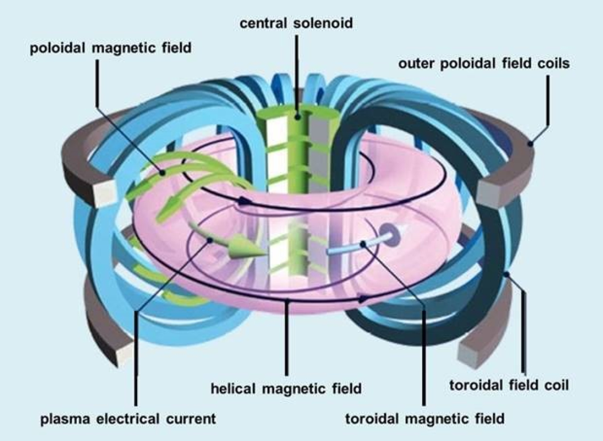
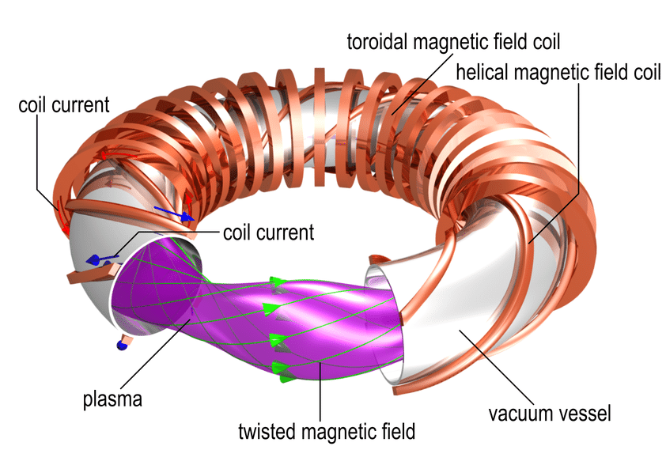

Plasma Confinement
Electron Plasma Oscillations
Plasma consists of ions and negatively charged electrons. If electrons are slightly displaced, local electric fields appear.
The electric field tends to return electrons to their original position. Due to electron inertia, oscillations begin. This process is similar to a spring, where the electric field acts as the restoring force.
Ion Acoustic Waves
Ion acoustic waves occur when ions oscillate and electrons redistribute, creating an electric field. This process resembles a sound wave.
vs = √((kTe)/mi)
where:
- Te – electron temperature;
- mi – ion mass;
- k – Boltzmann constant.
Magnetic Field Effects
A magnetic field changes particle motion due to the Lorentz force:
F⃗ = q(v⃗ × B⃗)
Charged particles rotate around magnetic field lines. The radius of this motion is called the Larmor radius:
rL = (m v⊥)/(qB)
If particles also move along the magnetic field, they follow a helical path with cyclotron frequency:
ωc = qB/m
Magnetic Plasma Confinement
One of the main challenges of fusion research is plasma confinement. Since plasma temperature reaches millions of kelvin, it cannot be held by ordinary materials.
Magnetic fields allow plasma to be confined without direct contact with reactor walls.
rL ≪ L
Particles follow magnetic field lines and remain inside the plasma.
Tokamak
A tokamak is a device for magnetic plasma confinement. The plasma has a toroidal shape.
Toroidal magnetic fields are created by external coils, while the plasma current creates a poloidal field. Together they form spiral magnetic lines.

Figure 1 – Tokamak magnetic confinement system
Stellarator
A stellarator uses external coils to create the magnetic field. Unlike tokamaks, it does not require a plasma current.

Figure 2 – Stellarator magnetic confinement system
Plasma Instabilities
Plasma is unstable because it contains charged particles, currents, magnetic fields, and extremely high temperatures.
- Kink instability – bending of plasma column.
- Sausage instability – compression and expansion of plasma.
- Drift instability – caused by gradients.
- Magnetohydrodynamic instability – plasma and magnetic field interaction.
Plasma Stability
Pressure inside plasma is described by:
p = nkT
Magnetic stability is described by plasma beta:
β = (2μ0p)/(B²)
In tokamaks β ≈ 0.1–0.2 corresponds to good confinement.
Laser-Plasma Interaction
Laser energy can ionize matter and create plasma. The interaction depends on plasma density.
The critical density ncr determines whether the laser penetrates through plasma or is reflected by electron shielding.
Near-critical density materials such as low-density foams are used because the laser can penetrate and efficiently create plasma.